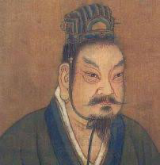

The Zhou dynasty took place from 1046 BCE to 256 BCE.
The Zhou dynasty stared when King Wu overthrew the Shang dynasty in the battle of Muye.
Originally King Wu was in charge and his decendants took over and their decendants after them and so on.
People were organized into the feudal system, meaning that people had slaves work for and report to them.
There were two main religions which were Confucianism and Taoism.
Cast iron was invented for tools and weapons.
The Zhou dynasty ended when many states became powerful and civil war took place, leading to the warring states.
